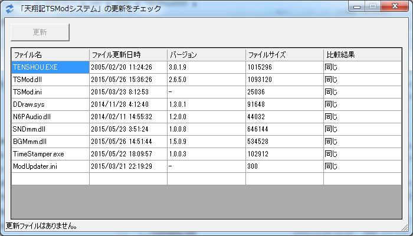

天翔記の様々なゲーム仕様、環境等を、変更可能とする。
天翔記最大の「基盤MOD｣となります。
TSModを導入することで、様々なパラメータ調整が可能となるだけでなく、
ScenarioModという天翔記SDKを利用した「改造行為」を超えて「プログラミング言語による開発行為」という一歩踏み込んで
ゲームを自由に楽しむことが出来るようになります。
Modアップデータとは、TSModの取得・更新チェック用の専用ダウンロードソフトです。
このModアップデータにより、最新版の取得や反映が容易になっています。

TSMod.dllの設定の変更などは、全てTSMod.iniをテキストエディター等で書き換えることで行います。
ご自身のお好みのテキストエディターで設定を自由に書き換えることが出来ます。
テキストエディターを普段利用していないという方は、以下に｢サクラエディタ｣を用意していますので、これを｢天翔記フォルダー｣に入れて利用してください。
このサクラエディタは、若干ながら、TSMod.ini専用にカスタマイズされています。
天翔 明朝 フォントをダウンロードして、フォントをインストールして下さい。
通常のフォント形式ですのでWindowsでインストールしたことが無いという人はネットで検索して下さい。簡単です。
「フル効果音キット」をぜひ導入してください。導入されていれば、TSModは拡張機能に応じたより適切なSEを再生することが可能です。
Windows Vista以降では、「デフォルトの状態」では、拡張子「.hlp」がサポートされなくなりました。
又、Windows10以降では、マイクロソフトによるサポートが「完全に」無くなりました。
必要に応じて、ヘルプファイルが見れない場合の対処 を閲覧してください。
神パッチの各種設定は一切機能しなくなります。
なぜなら、TSModは神パッチの機能を全て取り込んでおり、より細かく設定や調整が可能となっているからです。
DirectXのバージョンが古いです。(メジャーバージョンではなく、マイナーバージョンが古い)
にてDirectXを最新にしてください。
(各DirectXは、各々のメジャーバージョンは変化しませんが、その内容は細かく更新されていっています。)
CDから再生しているか、HDDから再生しているか、いくつのトラック数から再生しているかなど、
設定が噛み合っていないと思います。
TSMod.iniの「environment_bgm_mode」の設定値 を確認してください。
神パッチを利用しておられた方は、CDトラックの項目をご自身の設定に合わせて再調整してください。
一般的に、音楽を「CD」で再生されている方は｢デフォルト｣、
他のアプリ経由など、拡張再生をされている方は｢全曲振り分け」になります。
この項目チェックによる640x480の画面での実行は対応外です。
TSModは正常に機能しません。
フル画面に近い環境として、「スクリーン切り替え用Mod」がありますので、こちらを利用してください。
はい。動作します。
30周年記念版の人は、まずは、 金パッチ を導入することで、状況を定番シリーズに近づけてください。
又、該当ページの導入の際は、「神パッチ導入」や「神パッチ起動」は特に行う必要がありません
(もちろん入れても問題はありません)
該当ページの設定やインストールが終わったら、TSModを導入してください。
TSMod.iniの設定で(きちっと設定するなら、TSModEx.ini というファイルを作り、そのファイルの設定で)
cmd['environment_bgm_mode'] = 1
を設定してください。
金パッチのページにもあるように、ゲーム起動の際は、「TSLaunch.mdx」をダブルクリックする(=CDROMを挿入する行為と同じ)などした後に、 天翔記を起動することとなります。
ウィルスチェックソフトの「アバスト(Avast)」や「ノートン(Norton)」で
DDraw.sysやSNDmm.dllがウィルスと誤報が出るという報告を受けています。
個別にファイルを「検査からの除外」するなどして対処してください。
ModUpdater.iniのファイルの中身から、ファイルを直接手動でダウンロードすることも可能となっています。
そういった形で対応してください。